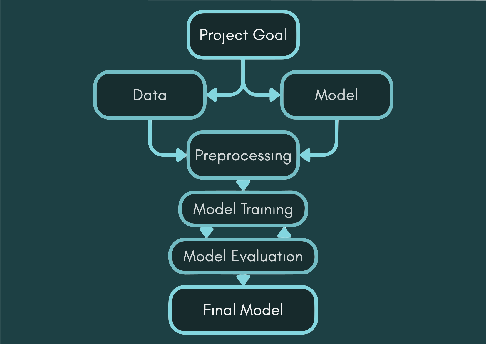
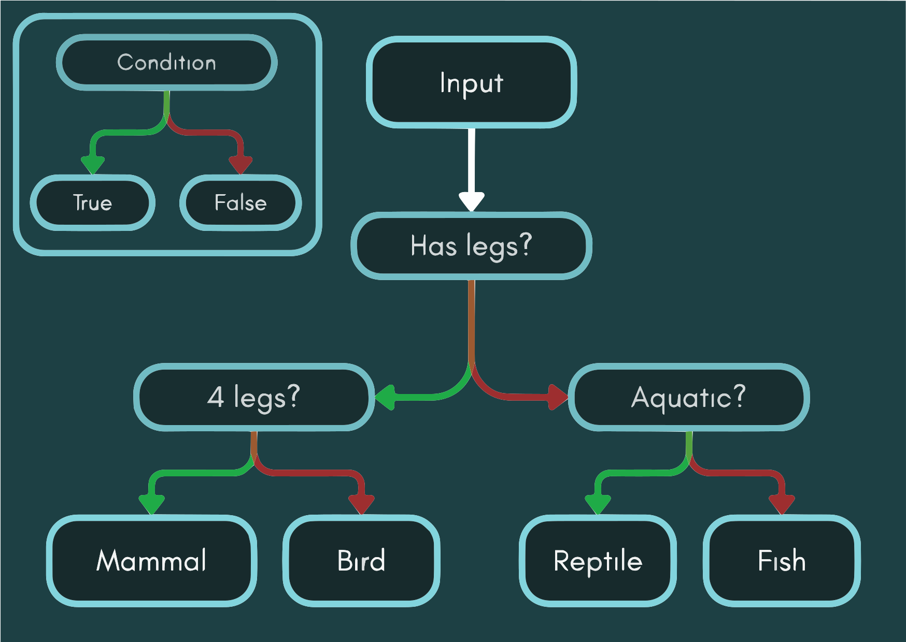
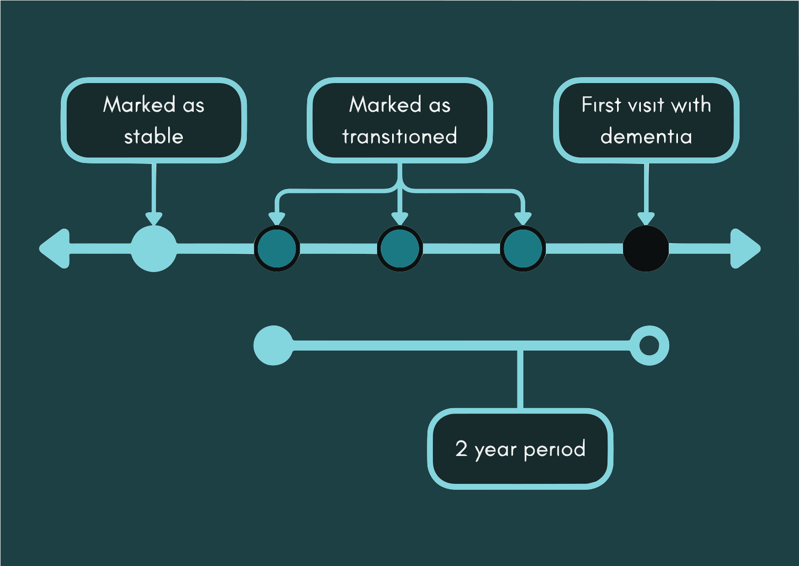
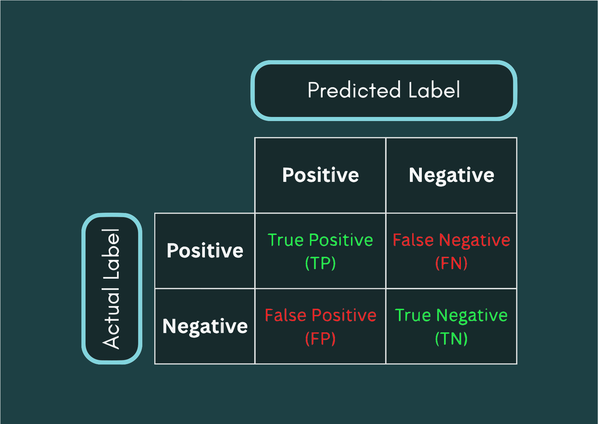
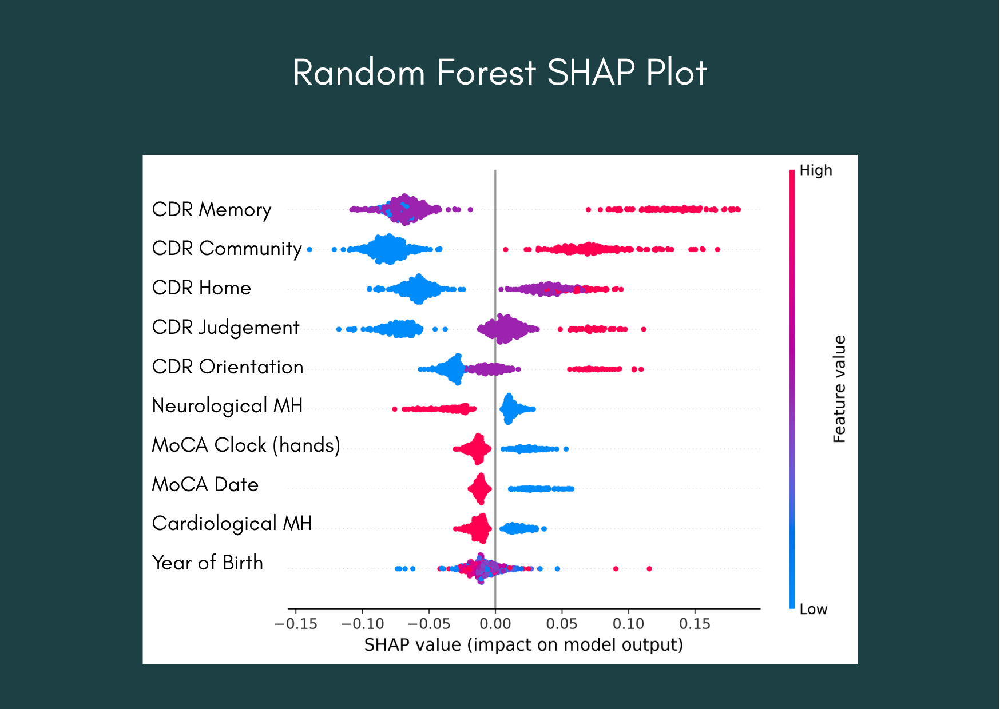

Disclaimer: All information used in this blog post was collected in late October 2026.
Contents
Introduction
For this endeavour, rather than the final model(s) creation being the end goal, the models themselves are merely means to fulfill the primary goal: to create a transparent* method to predict if an individual with mild cognitive impairment will develop dementia within two years, using relatively affordable data. As such, even in the final stages of the project, major changes are still being made in order to satisfy the goal as much as possible.
As my group's TAs said, my project is more of an engineering challenge rather than a scientific investigation. In engineering, the goal is to build a new solution to solve a real-world problem using existing tools, whereas scientific investigation focuses on uncovering the unknown. Nothing revolutionary will take place here, nor will any mysteries be solved. My goal is merely to engineer a solution to a problem of interest.
*Transparent in this case means that the Python library named SHAP will be implemented to see the model weights for each feature for a given decision.
Background
As shown in the following figure, the percentage of people over 65 is growing over the years.
Note. This figure contains the percentage of the world's population over 65 in relation to the year going from 1960 to 2025 (UN Population Division, n.d.).
This causes two main issues pertinent to the problem at hand. First, people over 65 are more likely to be retired, as the average normal retirement age in OECD countries is less than 65, decreasing the number of people available in the workforce (Organisation for Economic Co-operation and Development, 2025). Second, the risk of Alzheimer's roughly doubles 5 years after the age of 65 (Alzheimer's Society, n.d.). What these two issues do in tandem is they increase the number of people who need specialized care, while decreasing the labour force required to care for them.
Now, a project such as this one, with its focus and its goals, cannot treat Alzheimer's, provide specialized care, or increase the labour force. What it can do for individuals and families is provide an early warning system to prepare prior to diagnosis to reduce the impact of sudden deterioration. On the other hand, for institutions, it can serve as an administrative tool for the purpose of resource allocation by predicting future needs.
Another problem that is loosely related to the previous ones is the lack of the experts required to deal with Alzheimer's and other neurological conditions. This disproportionately affect low-income countries with "[over] 80% of neurological deaths and health loss occur in low- and middle-income countries, and ... high-income countries have up to 70 times more neurological professionals per 100,000 people" (World Health Organization, 2024). This very problem is why the project focuses on affordable data; a lower income country cannot afford to pay for free healthcare for all its citizens, so the barrier-to-use of the solution must fit the problems.
General Machine Learning Basics
Moving on to the creation of the "solution" that came as the product of the goal, I would like to begin by providing a brief overview of the necessary background for the coming segments. (This section is only a very basic overview; it can be completely skipped if the reader is well-versed in the topic)

Note. This figure is an illustration of the process outlined in the paragraphs below.
The process of creating a machine learning model can be distilled down into a few interconnected points. In most situations, the first order of business, is to make arguably the most important decision of all: deciding the model's goal; this decision defines and guides every other that follows. After that, the process is more fluid, one can continue by obtaining and processing the data, and then selecting a model to suit that data, or one can select a model and then find and process suitable data for that model instead.
Preprocessing
Whichever path is chosen, both steps remain equally important. To the model, the data is like a building's foundations. With low quality data, a well-performing model cannot be formed, however, even starting with poorer quality data, with careful "cleaning" the data's quality can be improved. This is known as preprocessing. While there are a variety of interesting techniques that can be covered on that topic, this is the background section, thus we shall move on to model selection instead. If more information about preprocessing is desired, Wikipedia and GeeksForGeeks have more in-depth explanations here and here respectively.
Model Selection
Next, to cover model selection, there are three basic types of machine learning models, supervised learning models, unsupervised learning models, and reinforcement learning models. supervised learning models is when data is given to the model where the "label" that is the goal of the model's creation is included with the data. There are two main types of supervised learning models, classification models and regression models, with each type completing a different task. Moving on to unsupervised learning models, they are the antithesis of supervised learning models, being models where data is given without the "label". They have a lot more categories than supervised learning models, so it would take too much space to list them all, but an example would be clustering where if datapoints were plotted in an n-dimensional space, the points near each other would be categorized as groups. Finally, reinforcement learning models are based on principles similar to behaviorism from behavioral psychology and B.F. Skinner's experiments on operant conditioning. During training, the models' choices are either reinforced or punished until the final results are as desired. As this project's models were all supervised learning models, the next section will focus on supervised learning models only.
As stated above, supervised learning models can be divided into two main types, classification models and regression models, however the two types do overlap on occasion, for example logistic regression models which is a classifier derived from linear regression models (Murel & Kavlakoglu, n.d.). Classification models split data into categories, such as sorting animals into mammals, avians, reptiles, amphibians, and fish. Some examples of classification models are the aforementioned linear regression model, decision trees, and random decision forests. Regression models, on the other hand, predict a number, such as if a model were given a person's address, age, gender, and other general information, the model would output their predicted income. Some examples of regression models area linear regression models, polynomial regression models, and ridge and lasso regression.

Note. This figure illustrates the simplified design of decision trees where green arrows symbolize that the condition was true and red arrows symbolize that the condition was false.
Focusing more on decision trees and random decision forests for a moment, decision trees are similar to flowcharts in design, as they are composed of branching paths where the end of each path are the classes that are classified. When a decision tree is trained, the model chooses the conditions based on algorithms depending on the hyperparameters, however decision trees are often biased, disproportionately predicting one class over the other or overfitting on training data. This brings us to random decision forests which, as its name suggests, contains a "forest" of decision trees. What random forests lose in simplicity of interpretation, they gain in robustness against bias and overfitting. The models used in this project are random forest and other tree-based ensemble models.
Model Training
Model training is the part where the previous steps come together. This is where the processed data is fed into the chosen model, and the model adjusts its own parameters to gain the desired result as set forth in the project goals.
Model Evaluation
This step is done in tandem with model training, moving back and forth depending on the previous iteration's results. In model evaluation, it is tested how well the model generalizes to a dataset it was not shown during training using various metrics, such as its accuracy, its precision, or its recall. After each evaluation, the model's hyperparameters are adjusted to best fulfill the goals.
Preprocessing
After the summary of the model creation process above, to better understand the steps of the preprocessing that took place, let us view a brief overview of the data.
Data Overview
The dataset came in a format where data from different categories were placed in separate files, with each row in all files summarizing one visit, identified by a personal ID and visit date. All in all, there were seven files selected for the project:
- Current medication
- Family dementia history
- Medical history in categories (one-hot encoded)
- Demographics
- Montreal Cognitive Assessment (MoCA)
- Clinical Dementia Rating (CDR)
- Diagnosis
The data that was chosen was all specifically picked for the sake of the affordability of data mentioned in the project goals. All seven files are items that are either typically within patient files from the start, such as current medication or medical history, or commonly collected, such as MoCA and CDR.
After the goal was decided, the first action taken was preprocessing of the dataset which can be broken down into three parts, data filtering, general processing, and data imputation.
Beginning with data filtration, a large number of features in each file had large swathes of missing data. While data imputation can handle this, with a lower number of examples filled in, the imputation procedure used in this project would not have been sustainable. As such, most of these features were removed. Aside from that, there were some features that were redundant together, such as the year of birth versus the date of birth, as such one would would be dropped. Other features removed were features that could not be processed within the chosen model without large amounts of feature creation, such as the individual's occupation which was recorded in a text form. Finally, cognitively unimpaired individuals and individuals who did not have at least some data in all 7 files were removed as they were not the target of the model.
Next, the general processing stage had miscellaneous techniques that cannot be neatly categorized. There were two main segments to the processing done in this part. First, I one-hot encoded many of the columns that had not already been one-hot encoded in the dataset itself. This includes gender, dominant hand, and most importantly the medication dataset. For the medication dataset, I extracted each individual medication an individual was taking in a period of time, and summarized it into a single row with each medication as its own feature. Second, I added a column to the visits showing if the individual developed dementia with two years of said visit as shown in the figure below.

Note. This figure is a diagram depicting the process of marking a visit as stable/transitioned mentioned in the above paragraph.
Finally, in the data imputation stage, I replaced missing values in the data with other values depending upon what fits best in the feature's context. For example, there was a feature that recorded if an individual has ever smoked and a separate feature recording how many years they smoked. If an individual has never smoked, it follows that they would have smoked for 0 years. For features with similar logical relationships, I set their values to be in relation to the other. On the other hand, for features without obvious connections to each other, they would be set to the average value of other datapoints in the same class.
Model Selection
In this project, three different machine learning models were used, random decision forests, light gradient boosting models, and extreme gradient boosting models. All of them are tree-based ensemble models, chosen for their ability to "understand" nonlinear relationships as most of the data used is categorical.
Random Decision Forests (RF)
RF models are one of the basic types of models often taught in introductory machine learning classes. This is because their underlying mechanics are relatively simple to grasp and visualize. An RF model is composed of multiple decision trees where each tree builds independently of and parallel to the others and the final answer is arrived at through a similar mechanic to a vote between trees. RF models are grown by level, meaning that when the model builds the decision trees, they increase the depth uniformly, resulting in symmetric trees. A main benefit of RF is that models of this type are rather resistant to overfitting since the individual biases of the decision trees tend to cancel themselves out.
Light Gradient Boosting Models (LightGBM)
Unlike RF models, the decision trees inside LightGBM models are built sequentially, with the next tree focusing specifically on correcting the errors of the next one. This specific technique is the boosting part in the name of this model type and XGBoost. Due to this technique, LightGBM models have a higher ceiling for accuracy than RF models. LightGBM models are different from the other two model types in that they grow in a way known as leaf-wise growth during the building of each decision tree. However, since these models grow in this way, they are particularly susceptible to overfitting.
Extreme Gradient Boosting Models (XGBoost)
XGBoost models is similar to being a midpoint between RF models and LightGBM models, being a boosting model like LightGBM and a model-type that grows by level like RF models. They are more vulnerable to overfitting than RF models, but less so than LightGBM models.
Model Training & Evaluation
Model training and model evaluation are inextricably intertwined. Before a model is finalized, one must move back and forth between the two steps numerous times in order to create the ideal model. As such, this section will cover both of them, while focusing on the specific techniques used to handle them.
After the data has been processed and the models have been chosen, the next step is to train the chosen models using the data. For evaluation's sake, the data has to be split into data used during training and data used during testing. This is to prevent the model from memorizing the test data, so that its true performance can be accurately discerned. Technically, there is supposed to be a separate validation test for tuning hyperparameters as well, but the technique used for tuning in this project will automatically split the training data further, so it is not a concern here.
Model Evaluation
I would like to explain some model evaluation metrics for classification models before continuing further. When a model makes a prediction for a class, the prediction can be classified into four different types specifically: True positive, true negative, false positive, and false negative.

Note. This figure explains the true/false positive/negative concept mentioned in the paragraph above.
Most metrics are derivatives of the above four types, with each metric targeting different combinations. For example, precision measures how often the model is correct if it predicts positively, recall measures the percentage of positive cases the model manages to catch, and F1 score is a score that balances both precision and recall.
In this project, I utilized certain techniques to handle both evaluation and training in tandem, namely GridSearchCV and HalvingGridSearchCV. GridSearchCV is a technique where the programmer passes in a "grid" of hyperparameters they would like to test and the metrics the programmer would like the model to be scored on, then GridSearchCV would try out every possible combination in the grid and output the one with the highest score in the chosen metric. However, this technique can take an incredibly long time to run, as it has to create one model for every single combination. For example, if the programmer wanted to test 7 different hyperparameters and 5 values for each, GridSearchCV would have to train 78,125 models. This is where HalvingGridSearchCV comes in. Rather than testing every single possible combination on large datasets, which takes more time, HalvingGridSearchCV trains all the models on a small cut of the data, removes the bottom third of the models, trains the remaining ones on a larger dataset, and then continues to remove and train until there is one final model.
Using both techniques, I trained and selected one of each of the model types. Sadly, I have to admit that my models did not perform very well even after hyperparameter tuning. Some of the models' selected features are also precisely the opposite of current medical literature, which is unusual, as all three models chose that feature for some reason I cannot currently fathom. I plan to continue investigating these issues after the camp ends.
SHapley Additive eXplanations (SHAP)
The Shapley value is a method proposed by Lloyd Shapley in 1951 from cooperative game theory that is used to fairly distribute the total contribution of each player in a group on an outcome.
In Python, there is a library based on the Shapley value which is known as SHapley Additive eXplanations. As its name suggests, the SHAP library is used in order to output the numerical impact of each feature on the outcome. When SHAP analyzes a model, it determines the model's baseline value which is what the model would answer if none of the features had any impact at all. Hypothetically if a model's final answer were 0.7 and the baseline value was 0.5, perhaps SHAP would say feature 1 added 0.1, feature 2 subtracted 0.2, and feature 3 added 0.3 which sums up to 0.7.
In this project, SHAP was implemented for the purpose of checking the logic behind the models as well as each individual decision made. Some of the feature weights were logically sound, for example the number of years smoked increased the probability that the model would predict that the person would develop dementia which is medically supported (Alzheimer's Society, n.d.-b). However, some were precisely the opposite of medical literature, such as the models' determination that previous cardiological issues was associated with a decreased risk of dementia which is troubling (Fisher Center for Alzheimer's Research Foundation, 2026).

Note. This figure contains the SHAP plot for the Random Forest model. Each individual dot on the graph represents a visit in the dataset, with its horizontal position representing how it impacted the output.
Conclusion
In summary, during the duration of the camp, a total of three models were created, a random forest model, a LightGBM model, and a XGBoost model. While none of the three performed particularly well during evaluation, the basis behind some of the features selected by the final models were sound, even if certain others had issues. Although this brings the blog post to a close, this is certainly not the end of my foray into machine learning. I hope to be able to improve my models further and update this post again someday.
Acknowledgements
While I would have like to begin this blog post by acknowledging all the wonderful people that made this project possible, once I started writing it ended up being the slightest bit too long, so it has been moved here.
To start off, a very warm thank you to all the wonderfully kind TAs and Professors that formed Brain Code Camp and made this project possible. I especially thank the teaching assistants of my group, TA Moss and TA Bonus, for never complaining about my questions even though their official office hours had ended hours earlier and for opening up personal counseling sessions for when the deadlines loomed too close or when progress and inspiration stalled. To TA Aom and TA Bonus of group 1/A and TA Mark and TA Charlie of group 6/F and their group members who welcomed me during their own office hours, sharing their knowledge and ideas with me, thank you for your kindness.
I am also deeply grateful for the advice Professor Kanoon and Professor Por gave when they spectated during the office hours and the presentations, while I was unable to implement all their fascinating ideas within the time period of the camp, I will certainly make the time try them for curiosity's sake. Finally, I would like to thank TA Gus and Professor Pum for their insightful questioning during the final project presentation. Both of their queries were incredibly interesting and illuminated angles of the project I hadn't considered at the time which will allow me to build on this project further in the future.
Before this post ends, I would like to shout-out my fellow group 8/H members for their creative projects and technical skill. Seeing their ideas shift and grow week-by-week was a joy, and their final project presentations were dazzlingly bright. I truly look forward to reading their blog posts once posted to the public.
Thank you for taking the time to read this post.
References
Alzheimer's Society. (n.d.-a). Risk factors for Alzheimer's disease. Retrieved November 1, 2026, from https://www.alzheimers.org.uk/about-dementia/types-dementia/who-gets-alzheimers-disease
Alzheimer's Society. (n.d.-b). Smoking and the risk of dementia. Retrieved November 3, 2026, from https://www.alzheimers.org.uk/about-dementia/managing-the-risk-of-dementia/reduce-your-risk-of-dementia/smoking
Fisher Center for Alzheimer's Research Foundation. How Heart Health can Affect your Alzheimer's Risk. Retrieved November 3, 2026, from https://www.alzinfo.org/articles/diagnosis/how-heart-health-can-affect-your-alzheimers-risk/
Murel, J. & Kavlakoglu E. (n.d.). What are classification models? Retrieved November 2, 2026, from https://www.ibm.com/think/topics/classification-models
Organisation for Economic Co-operation and Development. (2025, November 27). Pensions at a glance 2025. Retrieved November 2, 2026, from https://www.oecd.org/en/publications/2025/11/pensions-at-a-glance-2025_76510fe4/full-report/current-retirement-ages_0f63b747.html
UN Population Division. (n.d.). World Population Prospects. World Bank Open Data. Retrieved November 1, 2026, from https://data.worldbank.org/indicator/SP.POP.65UP.TO.ZS
Wikipedia. (n.d.). Hyperparameter (machine learning) Retrieved November 2, 2026, from https://en.wikipedia.org/wiki/Hyperparameter_(machine_learning)
World Federation of Neurology. (n.d.). The Global Impact of Brain Diseases and Disorders. Retrieved November 2, 2026, from https://wfneurology.org/activities/brain-health-initiative/the-global-impact-of-brain-diseases-and-disorders
World Health Organization. (2024, March 14). Over 1 in 3 people affected by neurological conditions, the leading cause of illness and disability worldwide. Retrieved November 2, 2026, from https://www.who.int/news/item/14-03-2024-over-1-in-3-people-affected-by-neurological-conditions--the-leading-cause-of-illness-and-disability-worldwide